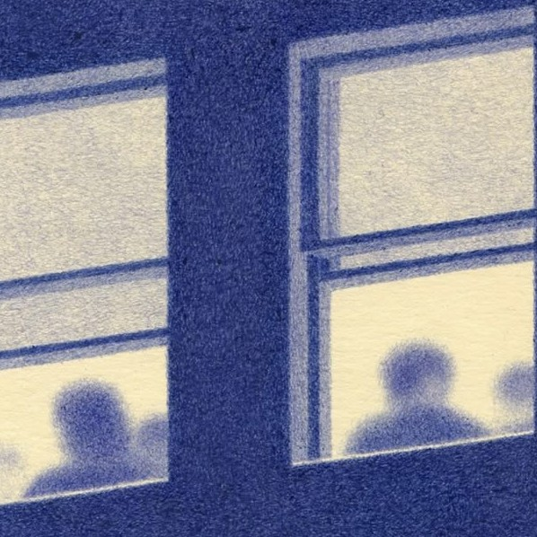
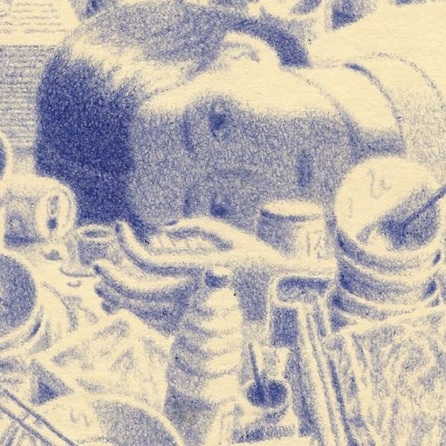
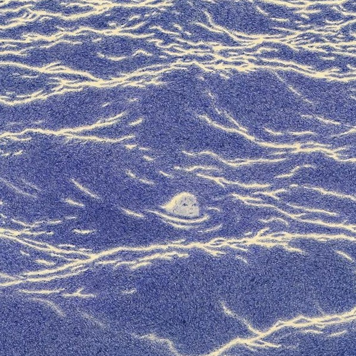

Week 1

Title: Getting Started
Date: February 17, 2025
Read more →Week 2
Title: Interaction and the WWW
Date: February 24, 2025
Read more →Week 3
Title: Interaction Design for the Web
Date: March 3, 2025
Read more →Week 4
Title: IxD Process
Date: March 10 , 2025
Read more →Week 7
Title: Ethics and Interaction Example
Date: March 31, 2025
Read more →Week 9
Title: Digital Equality
Date: April 21, 2025
Read more →Week 10
Title: Close Readings
Date: April 29, 2025
Read more →Week 11
Title: Making a Feminist Internet
Date: May 5, 2025
Read more →Week 12
Title: Code and Decoloniality
Date: May 12, 2025
Read more →Week 13
Title: What does an ethical internet look like?
Date: May 19, 2025
Read more →